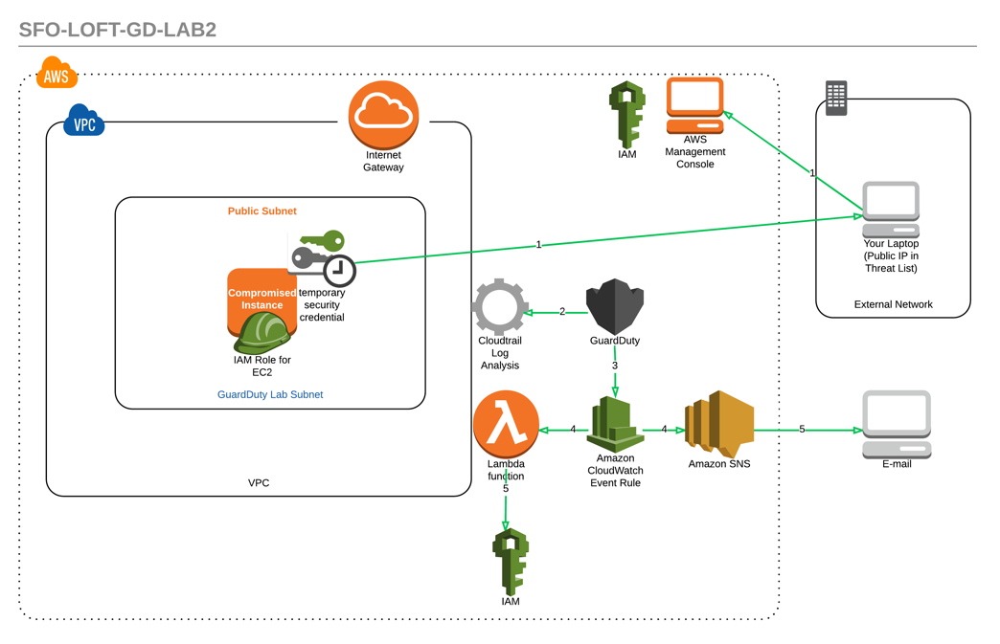
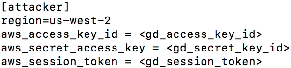

SFO Loft 12/14/17
SFO Loft 12/14/17 
For Lab 2 you will be setting up an environment which will allow you to trigger a number of IAM related GuardDuty findings. You will be adding your IP address to the current Threat List and be making a number of API calls which will simulate reconnaissance and unauthorized access findings. You will also be stealing credentials off an EC2 instance and making API calls locally to simulate an instance credential exfiltration finding. You'll receive email alerts for the various findings and one of them will also be triggering a Lambda function to automatically remediate the issue. Below is a visual of the environment you will be setting up:
The template will create a single EC2 instance and the supporting resources (SNS topic, Lambda Function, IAM Roles, etc) to enable you to simulate compromised AWS IAM credentials. You can click this link to launch the template. You can also just go directly to the CloudFormation service and upload the file from there. You can find the file for the CloudFormation template (sfo-loft-guardduty-lab-2.yml) is in the root of the Lab2-Simulation-and-Remediation-IAM directory in the folder from the zip file you downloaded and expanded. Please create the stack in us-west-2 (Oregon).

In order to simulate a GuardDuty finding you'll be uploading your IP address to your Threat List and and then be updating it in GuardDuty.
By now you should have received an email asking to confirm your SNS subscription. Click confirm to ensure you get remediation emails.
In this step you'll be adding a CloudWatch Rule in order to trigger your remediation Lambda function whenever GuardDuty flags any findings. Below are steps to create this rule through the console but you can also find out more about doing it programmatically by reviewing the GuardDuty Documentation.
Next, you need to take the EC2 IAM credentials off the instance and create a profile locally. You can do this by either connecting to the instance via SSH and querying the instance metadata or you can find the credentials in the AWS Systems Manager Store. On boot the instance exported its IAM credentials to the Parameter Store to allow you to easily retreive these without connecting to the instance.
Finding the Credentials in the Parameter Store
Creating a New Profile
Now that you know where to find your ECS IAM Credentials, you will need to create a new AWS CLI Named Profile in your credentials file. There are a number of ways to do this but below are some commands to help get you started:
Now if you view your ~/.aws/credentials file (command: cat ~/.aws/credentials) you should see a named profile called attacker. Since we're using temporary credentials we took from the EC2 instance we also need to include the Session Token in the profile and you're also going to hardcode the region in as well in ensure you don't accidently use a different region. Please use an editor of your choice to modify your ~/.aws/credentials file to include the session token and region. (e.g. command: vim ~/.aws/credentials). Below is an example of what the named profile should look like:
Now that you have your named profile set you can use it make API calls. Use the commands below to query different services to see what you have access to (don't be surprised if you see some access denied responses):
Let's see if we have any IAM permissions:
aws iam get-user --profile attacker
aws iam create-user --user-name Sasquatch --profile attacker
What about DynamoDB:
aws dynamodb list-tables --profile attacker
aws dynamodb describe-table --table-name GuardDuty-SFO-Loft-Lab2-Customers --profile attacker
Can we query the data?
aws dynamodb scan --table-name GuardDuty-SFO-Loft-Lab2-Customers --profile attacker
aws dynamodb put-item --table-name GuardDuty-SFO-Loft-Lab2-Customers --item '{ "name": { "S": "do_something" }, "lastrun": {"S": "201412250053"}, "lastworker":{"S": "1.2.3.4"} }' --profile attacker
aws dynamodb scan --table-name GuardDuty-SFO-Loft-Lab2-Customers --profile attacker
aws dynamodb delete-table --table-name GuardDuty-SFO-Loft-Lab2-Customers --profile attacker
aws dynamodb list-tables --profile attacker
Do you have access to Systems Manager Parameter Store:
aws ssm describe-parameters --profile attacker
aws ssm get-parameters --names "prod_dbpwd_gd_sample" --profile attacker
aws ssm get-parameters --names "prod_dbpwd_gd_sample" --with-decryption --profile attacker
aws ssm delete-parameter --name "prod_dbpwd_gd_sample" --profile attacker
Feel free to make other calls to see what you access to with those credentials.
Go to the EC2 console and launch an instance of your choosing. This is unrelated to the instance credentials you stole before and should help in generating findings related to your IP address on the Threat List.
After it's running go ahead and terminate it. Again, this is just to generate a number of API calls.
Based on the simulated attacks above what GuardDuty Findings do you expect to see?
These findings may take 10-15 minutes to show up in GuardDuty (IAM EC2 credential will take more like 25 minutes) so continuously check back in the service to see when they populate. You should also see alerts sent to your email. In the mean time below are some recommended steps to remediating compromised credentials in your AWS environment.
How would you remediate the issues you simulated today within your company?
Go to the Lambda console and review the GuardDuty-SFO-Loft-Lab2-Remediation.
Questions
If all has gone well you should have successfully simulated the following findings and received email alerts for both findings and remediations:
To verify that the InstanceCredentialExfiltration finding was remediated you can run one of the attacker commands you ran earlier (e.g. aws dynamodb list-tables --profile attacker). You should see a response that states that there is an explicit deny for that action. This is because the rememdiation Lambda Function attaches a policy to the EC2 IAM Role that revokes all active sessions. You can view this policy within IAM under the Role.
If you have time and would like to try out the extra credit, feel free to skip this until after you've completed the extra credit.
Right now the Lambda Function is only revoking the current sessions for the Role associated with the instance. Below are a couple enhancement options to add additional information in the email alert as well as limit the downtown of an application running on the instance.
Option 1 - Create a Lambda Function to Process Other Findings: Currently the Lambda function only remediates findings related to stolen EC2 IAM Credentials. Create a new function that processes the other IAM related to findings.
Option 2 - Add Credential Lifetime to Email Alert: Modify the function to pull the session token expiration date from the Parameter Store and add a more detailed email alert that includes how long the credential were active. This will enable the person being alerted to identiy how far to look back in the CloudTrail logs to verify what the compromised credentials may have been used for.
Option 3 - Add a New Instance Profile to all Affected Instances: Enhance the function to modify the instance profiles for all instances that are using the compromised Role. This will limit downtime of an application that's running on the instance because the credentials should be refreshed allowing the instance to continue to interact with AWS resources.